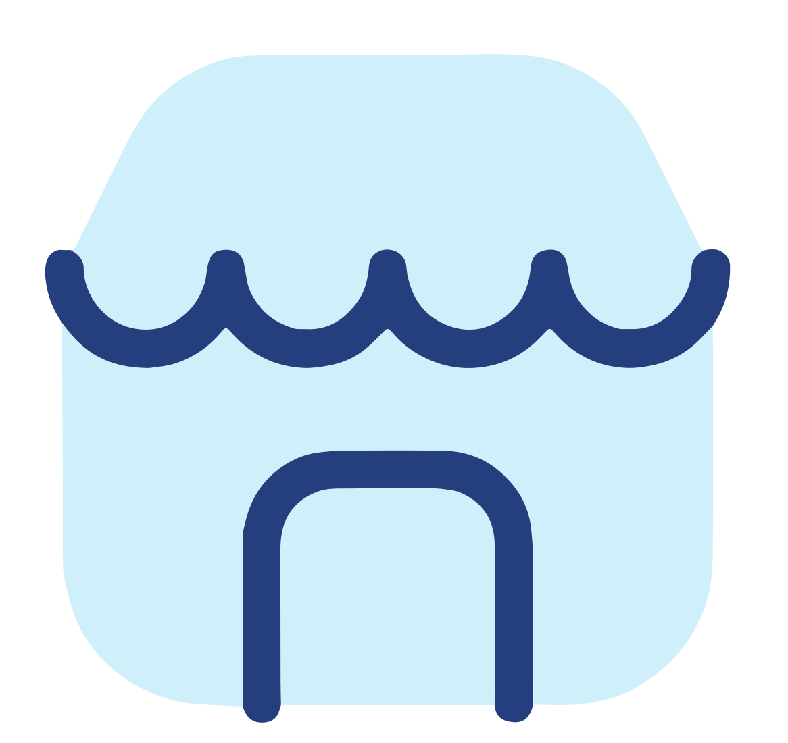
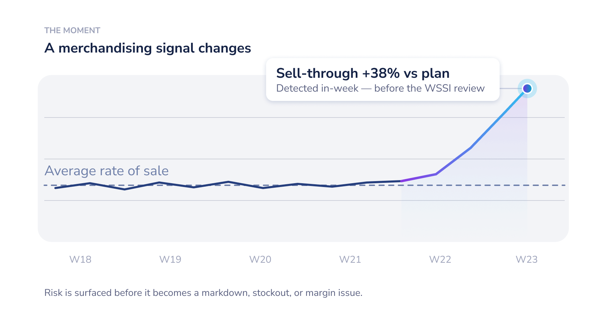

Board · Design system · Final for feedback
One visual language for the icons that carry meaning — anchored on Board’s own illustration style, unified across two densities: an expanded illustration for big canvases and a card icon where space is tight. Use the controls to compare the gradient and plain-navy line options, and the light / dark surface.
Two are brand-locked and set the vibe everything else must rhyme with. Two were flexible and clashed — the two-tone icons and the line illustrations. This system reconciles those two.
Agent icons Locked · brand
Cube sub-solution icons Locked · brand
Two-tone icons — FontAwesome Thumbprint (Light) Base · discussable

A light-blue fill under a twilight line — the two-tone recipe. This is the base the illustration icons bridge from; the drawn work below is its expansion, not a replacement.
So the two flexible families Our work — the two-tone icons above and the line illustrations — are unified below into one system that keeps the two-tone identity and the line-drawn feel.
Board’s marketing illustrations already carry the DNA. We didn’t invent a language — we distilled this one into a reusable icon system.

Kept as reference — this is the “Step 4” real asset. The system below reads as a continuation of it, not a departure.
How the anchor style presents in motion: the flat line settles, the gradient ramp draws itself in, the area fills, and the moment lands with a tooltip and a glowing node. No redesign — the original illustration, given the draw-in. We call this a concept illustration: rich, narrative, a single data-moment. (The card icons and expanded versions below are decorative illustrations.)
The icon system, bridged from the two-tone icon. Each concept in two densities that share one language: the gradient structural line (thick trunks → thin branches), a two-tone focal icon, faint dotted guides, and the draw-in. The big canvas tells the story; the card distils it to a focal mark.
Governed sources — ERP, cloud, spreadsheets, AI — collected through governance and activated into one platform, then out to decisions.
A protected core inside concentric layers of governance, with every action passing an approval on the path in.
One platform fanning out to thousands of users and lines of business, throughput holding as it scales.